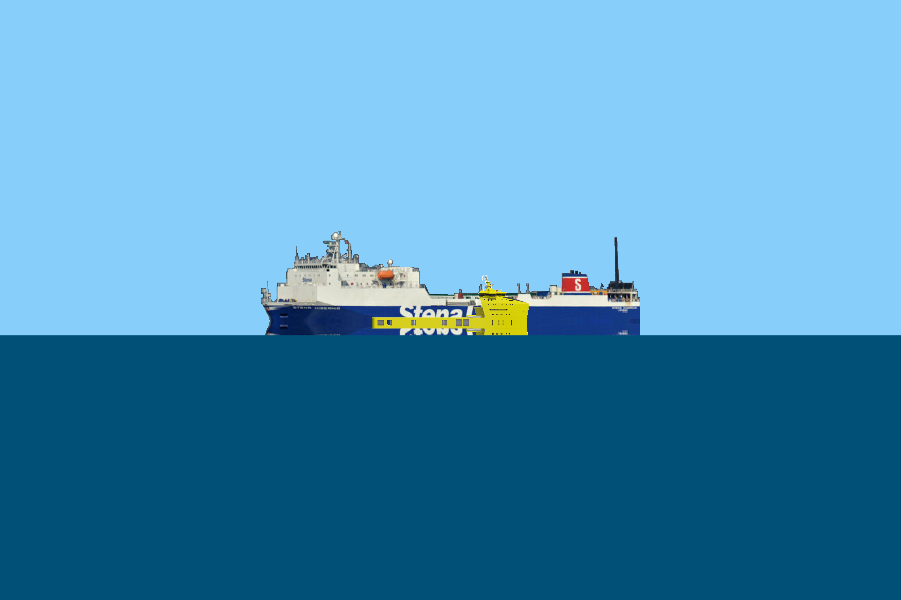
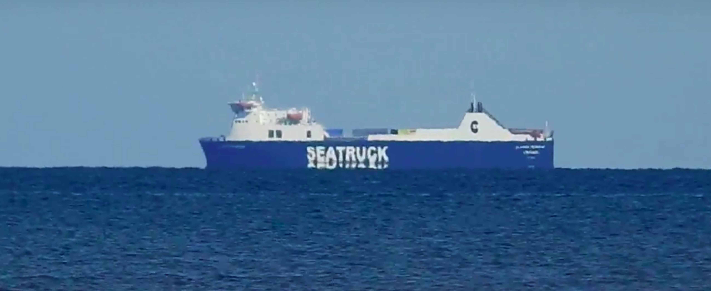

Simulation of an Inferior Mirage¶
In this example we show how to render an inferior mirage.
1 2 3 4 5 6 7 8 9 10 11 12 13 14 15 16 17 18 19 20 21 22 23 24 25 26 27 28 29 30 31 32 33 34 35 36 37 38 39 40 41 42 43 44 45 46 47 48 | from refraction_render.renderers import Scene,Renderer_35mm
from refraction_render.calcs import CurveCalc,FlatCalc
from refraction_render.misc import km_to_m
from pyproj import Geod
import numpy as np
import os
def T_prof(h):
e = np.nan_to_num(np.exp(h/0.1))
return (2/(1+e))*0.1
calc_args = dict(T_prof=T_prof)
calc = CurveCalc(**calc_args)
# this class is useful for calculating distances on a sphere
geod = Geod(ellps="sphere")
h_obs, lat_obs, lon_obs = 1, 54.487375, -3.599760
dist_boat_1 = km_to_m(5)
height_boat_1 = 10
dist_boat_2 = km_to_m(4)
height_boat_2 = 5
heading_boats = 270
lon_boat_1,lat_boat_1,back_az_1 = geod.fwd(lon_obs,lat_obs,heading_boats,dist_boat_1)
lon_boat_2,lat_boat_2,back_az_2 = geod.fwd(lon_obs,lat_obs,heading_boats,dist_boat_2)
renderer = Renderer_35mm(calc,h_obs,lat_obs,lon_obs,270,km_to_m(15),
vert_res=2000,focal_length=2000,vert_obs_angle=0.0)
# creating scene and putting objects in it to be rendered.
s = Scene()
# get image paths
image1_path = "cargo.png"
image2_path = "iStenaLine.png"
# Note the -1 in the dimensions means that the width of the boat is determined via the aspect ratio.
s.add_image(image1_path,(-1.0,lat_boat_2,lon_boat_2),dimensions=(-1,height_boat_2))
s.add_image(image2_path,(-0.5,lat_boat_1,lon_boat_1),dimensions=(-1,height_boat_1))
# render scene
renderer.render_scene(s,"boat_inferior_mirage.png")
|
Here is a result of rendering:
Compare this to an image taken by a Youtuber named Ranty Flat Earth:
Thanks Ranty for showing the earth is NOT flat!